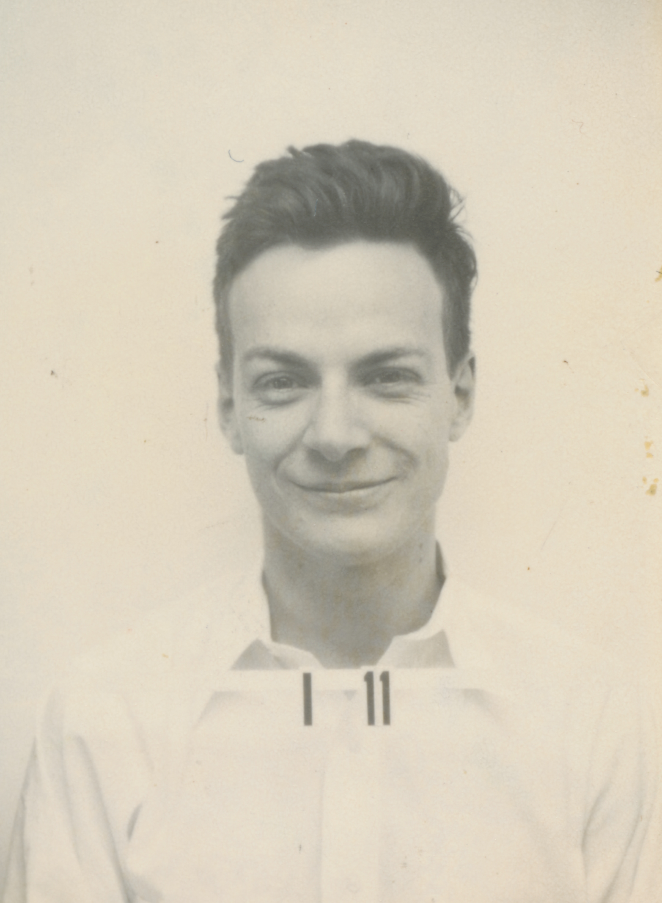
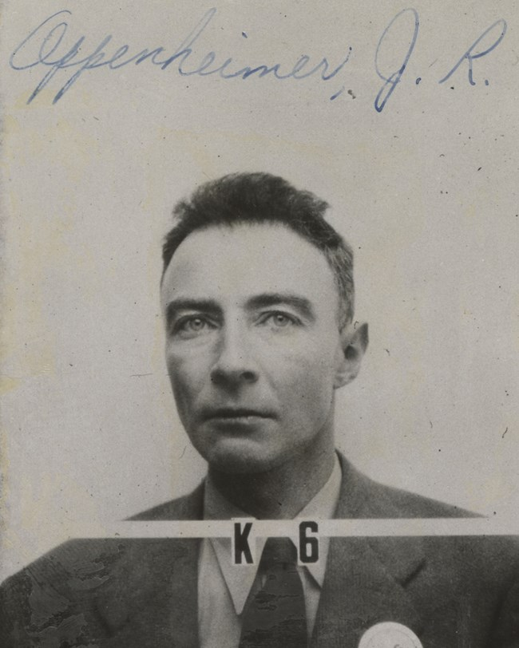

THE MANHATTAN PROJECT / A PEOPLE’S HISTORY
Behind every badge,
a human story.
The faces behind a world-changing project. Explore the security photographs of the people who lived and worked at Los Alamos.
Explore the collection ↓

PROJECT Y
HISTORICAL ARCHIVE
THE PERSONNEL COLLECTION
Faces of Los Alamos1404
FROM THE MONTAGE TO THE ARCHIVE
A collection, not just the familiar faces.
1,404 public image files are now indexed here, across the archive’s A–Z surname categories. Browse the contact sheet, search source labels, or open any photograph’s record. Alternate scans remain separate; this is not 1,404 unique people.
Reference montage: Bulletin of the Atomic Scientists, June 19, 2013. This cropped image guides the presentation—not automated face identification. The searchable index comes from Wikimedia Commons file records; remote photographs require internet access.
Collection scope & provenance ↗1,404 source files indexed locally from all 26 queried surname categories. Names and source links work without the Commons API; non-bundled images need internet access.
This snapshot covers the queried public image categories, not every historical badge or a complete employee roster; alternate scans may depict the same person. Badge ordering is alphanumeric, not arrival order. Untranscribed numbers appear last.
THE PLACES BEHIND THE PROJECT
Three sites. One connected history.
Explore interpretive exterior models of Los Alamos, Hanford, and Trinity. These are simplified historical exhibits, not accurate maps or blueprints.
Preparing the local Three.js viewer…
Drag to orbit · Scroll or pinch to zoom · Right-drag to pan. Keyboard-accessible view controls are above. Geometry loads locally; WebGL2 is required for 3D.
VRML 2.0 files contain the same exterior geometry, source links, and interpretation notes. No plugin is needed for the Three.js view.
Los Alamos .wrl · Hanford .wrl · Trinity .wrlThese site models do not establish that every Los Alamos badge holder visited Hanford or Trinity. No badge assignments are inferred from the site history.
BEHIND THE BADGES
A small photograph.
A place in history.
Known as Project Y, the Los Alamos laboratory brought together a community whose work changed the course of history. Beyond the familiar scientists were technicians, secretaries, librarians, and many others who made the laboratory function.
Security badges controlled access to the site. Their photographs, once made for identification, now offer a more personal view of this secret wartime community.
Read Alex Wellerstein’s “The Faces of Project Y” ↗RESEARCH SPOTLIGHT / BULLETIN OF THE ATOMIC SCIENTISTS
The faces that made the Bomb
This feature places the Los Alamos badge portraits in the context of a much larger workforce. Its introduction asks readers to look beyond the familiar physicists and consider people often left out of the standard story.
Our editorial approach: a portrait documents an appearance, not a person’s motives, temperament, ethnicity, or clearance. Individual biographies and badge identifiers require their own evidence.
Read the original Bulletin feature ↗Contextual reading, not a complete personnel roster. Article text is not reproduced here. A reduced reference montage is credited in the collection above. Source assessment & research priorities ↗
SOURCES & EDITORIAL NOTES
An independent educational collection, not an official government archive. Original badge photographs: Los Alamos National Laboratory, via Wikimedia Commons, the National Park Service, and the Department of Energy. See each record for provenance. Collection dates are approximate, not individual employment dates. Imported names are derived from source filenames and may retain historical spelling errors. No badge colors or clearances are inferred from monochrome photographs.